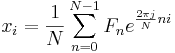

IFFT ist ein schneller Algorithmus, um inverse (oder rückwärts gerichtete) Fourier-Transformation (IDFT) durchzuführen, die den Prozess der DFT rückgängig macht. Die IDFT einer eingestellten Sequenz { Fn} kann definiert werden als:

Wenn eine IFFT an einem komplexen FFT-Ergebnis, das von Origin berechnet wurde, durchgeführt wird, wird das FFT-Ergebnis zurück in seinen ursprünglichen Datensatz transformiert. Dies ist jedoch nur wahr, wenn alle der folgenden Anforderungen erfüllt sind:
|
Hinweis: Die Zeitsequenz im Ergebnis von IFFT beginnt bei Null. Wenn die ursprünglichen Daten nicht bei Null beginnen, wird die Zeitsequenz, die durch die IFFT erzeugt wird, von der ursprünglichen Zeitsequenz aus verschoben. Das Intervall ist jedoch das gleiche. |
Um IFFT zu verwenden: